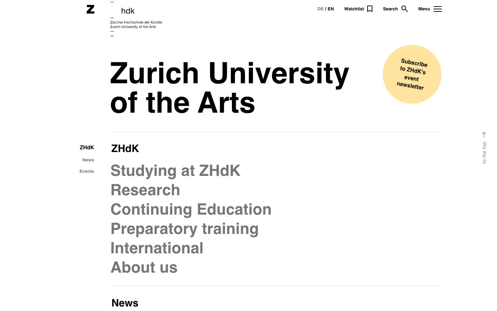

References / Website / 88
Zurich University of the Arts website
The ZHdK home page hangs a bold Helvetica title and a list of large gray links from one strong left axis.
- Source
- zhdk.ch
- Creator
- Zurich University of the Arts
- Style
- International Typographic Style (agent-proposed, not yet reviewed by a person)
- Moods
- Rational, clear, restrained
- Evidence
- Captured with
tools/capture.mjs(headless Chrome, 1440 × 900) on 25 September 2026 and inspected. The screenshot shows the first viewport; the measurement covers up to four screens. The English home page redirected to https://www.zhdk.ch/en/zurich-university-of-the-arts-1. - Reviewed
- Rights
- Third-party work, stored with credit for commentary. License: unverified. Rights policy
Observed
- A small Z logo and the letters hdk sit at the top left, with the school’s German and English names in very small type between short horizontal dashes.
- The title “Zurich University of the Arts” is set in two lines of large, bold black sans-serif, flush left.
- A round pale-yellow badge at the top right reads “Subscribe to ZHdK’s event newsletter” in tilted text.
- A thin gray rule separates the title from a section headed ZHdK.
- Six links (Studying at ZHdK, Research, Continuing Education, Preparatory training, International, About us) are set large, bold, and gray, flush left on the same axis as the title.
- In the left margin, the small labels ZHdK, News, and Events are aligned right, against the main axis.
Why it belongs
The measurement finds only Helvetica, square corners, no shadows, and one accent hue (the yellow badge). The base size is 45 px because the large links hold most of the characters, so the size range is only 1.89 even though the page has 10 px labels and an 85 px title.
The margin labels aligned right against the main text column are a direct Swiss-grid device: two columns meet at one shared axis.
Borrow
Set section labels in a narrow margin column, aligned right, so that they meet the main column at one vertical line.
Measured
Machine-extracted by tools/extract-traits.js on . Full measurement.
- Type families
- Helvetica (100%)
- Type scale ratio
- 1.89
- Median radius
- 0 px
- Mean chroma
- 0
- Palette
- #ffffff 64%
- #f1f1f1 22%
- #767676 7%
- #000000 7%
- #ffe49f 1%

